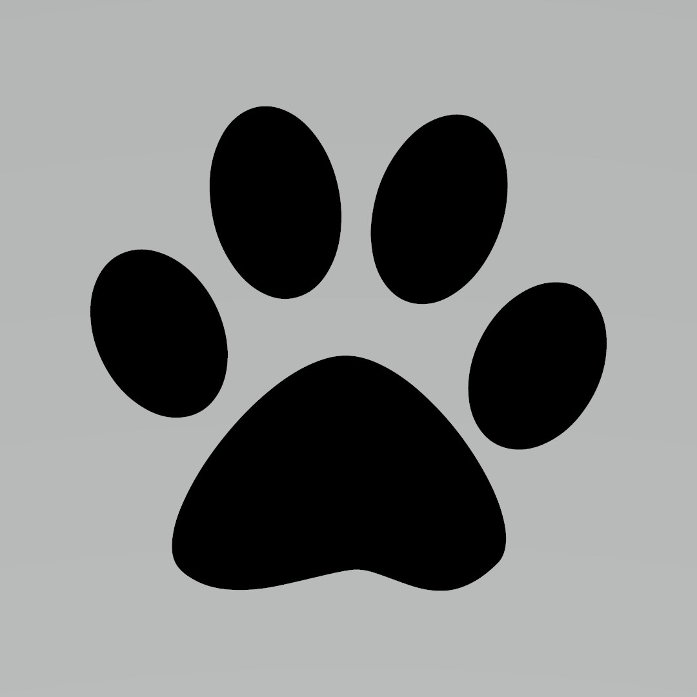
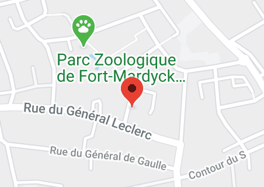

Qu'est-ce que c'est ?
Les chats libres du littoral est une association de protection animale. Elle permet le placement de chats et de chatons qui ont été abandonnés. Tous les chats sont accompagnés d'un contrat (puce et stérilisation). Cette association est basé sur le Dunkerquois (Nord, 59)
Où nous trouver ?

Adresse: 4 Rue des Droits de l'Homme, 59430 Dunkerque